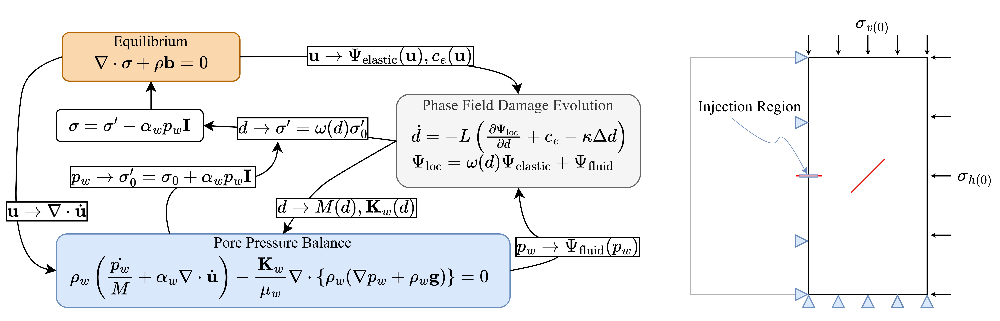
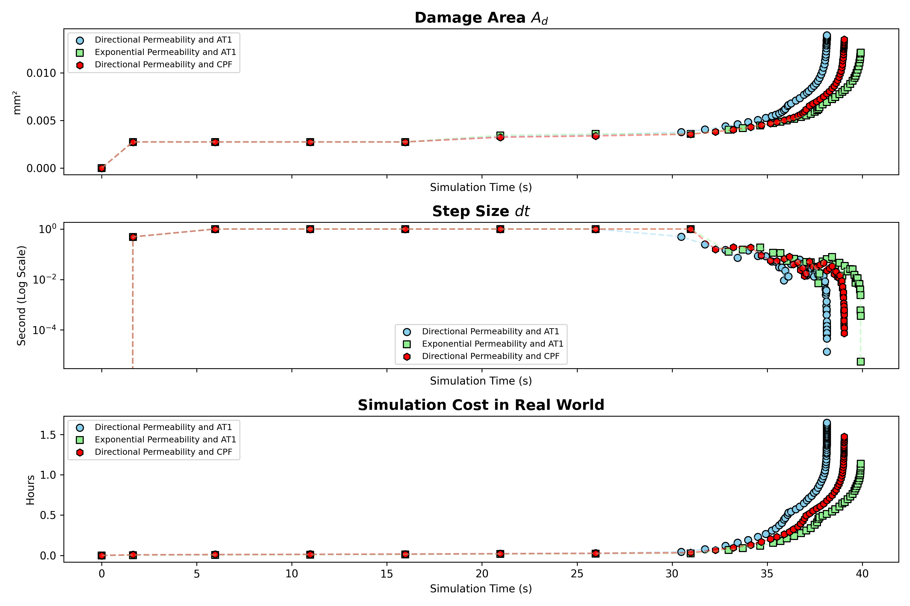

💧 2D Hydraulic Fracture Simulation in Saturated Media
🚀 Crack Extension via Fluid Injection
A 0.5m × 1m domain is used to observe how fluid injection interacts with a pre-existing crack. The pore pressure is linearly increased from 0 to 45 MPa over time.
Boundary conditions: bottom \( u_y \) and left \( u_x \) are fixed, with vertical stress \( \sigma_v = -10 \) MPa applied on the top and horizontal stress \( \sigma_h = -5 \) MPa on the right.
The model solves three governing equations: phase field fracture (PF), mechanical equilibrium, and pore pressure balance. Their interactions are summarized as:
🔁 Equilibrium ↔ Pore Pressure Balance:
• \( \mathbf{u} \) affects \( \nabla \cdot \dot{\mathbf{u}} \) in the fluid equation.
• \( p_w \) is used to calculate trial effective stress \( \sigma_0' \), which goes into PF.
🔁 Pore Pressure Balance ↔ Phase Field:
• \( d \) affects porosity, Biot’s coefficient, and modulus \( M(d) \).
• \( p_w \) contributes to fluid driving energy \( \Psi_{\text{fluid}} \) in PF.
🔁 Equilibrium ↔ Phase Field:
• \( \mathbf{u} \) provides elastic energy \( \Psi_{\text{elastic}} \) and extra driving force \( c_e \) in PF.
• \( d \) weakens \( \sigma_0' \) to compute degraded effective stress \( \sigma' \), and total stress \( \sigma \).
🚀 Multi-Physics System and Boundary Conditions

🔑 Key Highlights
✅ Equilibrium and pore pressure are fully coupled. PF model is loosely coupled with the rest.
✅ Custom implementation of interaction between PF and fluid system.
⚠️ Note 1: Main simulation uses non-AD + sub-app uses AD. Convergence is only achieved after manually tuning the variable scales.
⚠️ Note 2: Negative pore pressure is manually restricted: \( p_w \geq 0 \).
🔍 Analysis Entries
✅ AT1 and Cohesive Phase Field (CPF) models are used. See Crack Geometric Function effects for details.
✅ Two permeability models are tested:
- Directional Permeability:
\[ \mathbf{K}_w = \mathbf{K}_{w(0)} + A(\mathbf{I} - \mathbf{n}_d \otimes \mathbf{n}_d), \quad A = \phi^2 d^2 l^2 \] - Exponential Permeability:
\[ \mathbf{K}_w = \mathbf{K}_{w(0)} \exp(A), \quad A = (c_1 d)^{c_2}, \text{ with } c_1 = 2.5, c_2 = 3.5 \]
📊 Simulation Results
Directional Permeability with AT1 (Click figure to see animation)

Exponential Permeability with AT1 (Click figure to see animation)

Directional Permeability with CPF (Click figure to see animation)

Directional Permeability with AT1
(Click figure to see animation)
Exponential Permeability with AT1
(Click figure to see animation)
Directional Permeability with CPF
(Click figure to see animation)
Convergence Comparison

✅ Negative \( K_{xy} \) shows up in directional permeability because it alters normal and tangential crack flow directions. It's expressed in global coordinates.
✅ Here, \( \mathbf{n}_d \approx \nabla d / |\nabla d| \) is used as a quick estimate. More accurate approaches exist but are more tedious and code-heavy.
✅ Exponential permeability gives the best efficiency — it takes only ~1 hr to simulate 40 seconds of hydraulic fracture here.
✅ In directional cases, CPF cracks grow slightly slower than AT1, which is consistent with my previous observation.
✅ In practice, this difference is tiny. Focus should instead be on choosing appropriate material parameters and BCs.